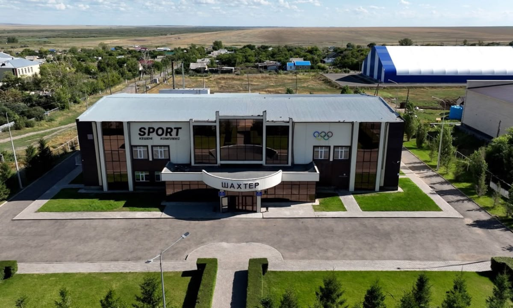

Физкультурно-оздоровительный комплекс (ФОК) села Шахтерского (Нуринский район, Карагандинская область) — это современный, образцово-показательный спортивный объект. Он является ярким примером государственно-частного партнерства: его строительство профинансировали совместно областной акимат и местное ТОО «Шахтерское» во главе с Георгием Прокопом. Спортивный комплекс в селе Шахтерском представляет собой современный многофункциональный объект, построенный для обеспечения городского уровня комфорта в сельской местности. Проект реализован в рамках государственно-частного партнерства при активном финансировании крупного местного аграрного предприятия ТОО «Шахтерское».

Физкультурно-оздоровительный комплекс (ФОК) села Шахтерского (Нуринский район, Карагандинская область) — это современный, образцово-показательный спортивный объект. Он является ярким примером государственно-частного партнерства: его строительство профинансировали совместно областной акимат и местное ТОО «Шахтерское» во главе с Георгием Прокопом. Спортивный комплекс в селе Шахтерском представляет собой современный многофункциональный объект, построенный для обеспечения городского уровня комфорта в сельской местности. Проект реализован в рамках государственно-частного партнерства при активном финансировании крупного местного аграрного предприятия ТОО «Шахтерское».
Комплекс разделен на специализированные функциональные зоны, позволяющие проводить круглогодичные тренировки и соревнования.